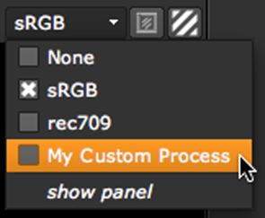

要创建自定义查看器过程，通常需要创建一个 gizmo，其中包括一些颜色校正，如查找表 (LUT)，并使用 Python 将其注册为查看器过程。(有关 gizmos 的更多信息，请参见 Gizmos 、自定义插件和通用 Tcl 脚本 )。
如果要在查看器过程中使用项目设置中列出的 1D LUTs 之一，则不需要创建自定义 gizmo。相反，您可以简单地注册一个名为 ViewerProcess_1DLUT 的内置 gizmo。此 gizmo 接受要使用 LUT 的参数，但不允许对其进行编辑。有关更多信息，请参见 将项目设置中的 LUT 注册为查看器进程 .
如果你想要比 1D LUT 更复杂的东西，可以在 LUT 在项目设置的选项卡上，您需要创建自己的 gizmo 并注册。有关更多信息，请参见 创建查看器进程 Gizmo 和 注册自定义查看器进程 .
| 1。 | 创建一个名为 Init.py 在你的插件路径目录中，如果一个已经不存在。有关插件路径目录的更多信息，请参见 加载 Gizmos 、 NDK 插件以及 Python 和 Tcl 脚本 . |
| 2. | 要将项目设置中的一个 LUTs 注册为查看器进程，请在 Init.py : |
Nuke.ViewerProcess.register (“Cineon”，nuke.createNode，(“ViewerProcess_1DLUT”，“current Cineon”))
这将一个名为 Viewer 的内置 gizmo 注册为查看器进程，并将其设置为使用 Cineon LUT。注册的查看器进程显示在查看器进程下拉菜单中 Cineon .
请注意，您可以将内置 gizmo 设置为使用项目设置中的任何 1D LUT。例如，要将其设置为使用 Panalog LUT，请使用以下函数:
Nuke.ViewerProcess.register (“Panalog”，nuke.createNode，(“ViewerProcess_1DLUT”，“当前 Panalog”))
| 1。 | 创建要用作查看器进程的节点。例如，您可以使用 ColorLookup 、 Vectorfield (3D LUT) 、 Truelight 或 Colorspace 节点。 |
| 2. | 选择要包括在查看器进程中的节点，然后选择 其他 > 集团 . |
| 3. | 要选择查看器进程的用户可以调整的控件，请右键单击 “组属性” 面板的深灰色背景，然后选择 管理用户旋钮 。有关如何将控件添加到 gizmo 的更多信息，请参见 创建和采购小发明 . |
如果您公开与查看器中的控件同名的控件 (如 增益 或 伽马 )，然后查看器中的控件用于驱动这些控件。但是，如果公开相同控件的输入进程也在使用中，则输入进程优先，查看器控件驱动它，而忽略同名的查看器进程控件。有关输入过程的更多信息，请参见 使用查看器控件 > 输入过程和查看器控件 .
| 4. | 一旦您对修改后的查看器进程组感到满意，请单击将其导出到 gizmo 导出为 gizmo 在 节点 组控件的选项卡。 |
| 5. | 在出现的文件浏览器中，单击 家 。类型 。 Nuke / 在文件浏览器底部显示的路径之后。在路径后输入名称，并附加 。Gizmo 名称后的扩展。名字应该以大写字母开头。最后，单击 保存 . |
| 6. | 继续将 gizmo 注册为自定义查看器进程，如下所述。 |
提示:
如果您愿意，您可以在注册之前将查看器进程 gizmo 作为输入进程进行测试。执行以下操作:
1。在查看器的右上角，将查看器进程下拉菜单设置为
没有
.
2。在节点图中选择 gizmo。
3。要打开或关闭输入过程，请单击查看器控件中的 IP 按钮。如果您对结果满意，请继续将 gizmo 注册为查看器进程。
有关输入过程的更多信息，请参见
使用查看器控件
>
输入过程和查看器控件
.
提示:
如果要查看或修改现有查看器进程的内部，可以执行以下操作:
1。从 “查看器进程” 下拉菜单中选择要修改的查看器进程。
2.选择
编辑
>
节点
>
将查看器进程复制到节点图
。这会插入在节点图中选择的查看器进程 gizmo。
3.双击 gizmo 以打开其控件。转到
节点
选项卡并单击
复制到组
。这为您提供了 gizmo 的可编辑组版本。
4。在组控件中，单击
S
显示组内部的按钮。它们显示在节点图的新选项卡上。
5.进行更改，并通过单击将组导出到 gizmo
导出为 gizmo
在
节点
组控件的选项卡。
提示: 如果在查看器进程 gizmo 中使用 ViewerLUT 节点，则可以切换 Rbg_only 在 ViewerLUT 控件中，定义 LUT 是应用于所有通道，还是仅应用于红色、绿色和蓝色通道。您还可以在 Viewer Process gizmo 的控件中公开此控件，以便用户可以自己设置。
| 1. | Create a file called init.py in your plug-in path directory if one doesn’t already exist. For more information on plug-in path directories, see Loading Gizmos, NDK Plug-ins, and Python and Tcl Scripts . |
| 2. | 要将 gizmo 或节点注册为查看器进程，请在 Init.py : |
Nuke.ViewerProcess.register ()
例如，将名为 MyProcess.gizmo 的 gizmo 注册为查看器进程，并将其显示在查看器进程下拉菜单中 我的自定义过程 ,您将输入以下内容:
Nuke.ViewerProcess.register (“我的自定义进程”，nuke.Node，(“我的进程”，“”)
您的查看器进程现在应该出现在查看器控件中。

如果需要取消注册查看器进程，可以使用 Nuke.ViewerProcess.unregister () 。例如:
Nuke.ViewerProcess.unregister (“我的自定义进程”) .
要获得有关这些语句使用的帮助，您可以输入 帮助 (nuke.ViewerProcess) 在脚本编辑器中。
提示:
您也可以将参数传递给
Nuke.ViewerProcess.register ()
。例如，注册一个模糊节点及其
尺寸
旋钮设置为 10，您可以输入以下内容:
Nuke.ViewerProcess.register ("Blur"，nuke.createNode，("Blur"，"size 10"))
提示:
您可以轻松地将项目设置中定义的任何 LUT 注册为查看器过程。有关如何执行此操作，请参阅已安装的
Menu.py
注册内置查看器进程的文件。你可以找到
Menu.py
在以下位置:
在窗户上
:
驱动器号: \ 程序文件 \
Nuke
10.5v8
\ 插件或
驱动器号: \ 程序文件 (x86) \
Nuke
10.5v8
\ 插件
在 Mac OS X 上:
/应用程序/
Nuke
10.5v8
/
Nuke
10.5v8
。应用程序/内容/MacOS/插件
在 Linux 上:
/Usr/本地/
Nuke
10.5v8
/插件
|
|